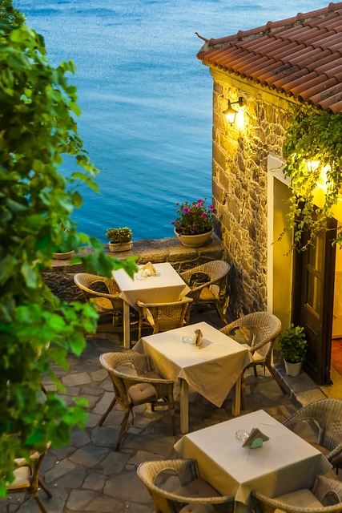

Explora los mejores lugares para disfrutar de buena comida

Con una cocina tradicional y un ambiente acogedor, La Buena Mesa se ha convertido en un referente de la gastronomía local. Destacan sus platos de temporada y su excelente servicio.
Leer másEspecializado en mariscos frescos y cocina mediterránea, El Sabor del Mar ofrece una experiencia culinaria junto a la costa que deleitará a los amantes del pescado y mariscos.
Leer másCon una mezcla de sabores de todo el continente asiático, Fusión Asiática combina lo mejor de la cocina japonesa, tailandesa y china en un menú sorprendente y lleno de creatividad.
Leer másRodeado de naturaleza y con un ambiente íntimo, El Jardín Secreto ofrece una experiencia gastronómica única, ideal para cenas románticas. Sus platos con productos frescos del huerto son imperdibles.
Leer másSi buscas la auténtica gastronomía vasca, este es el lugar perfecto. Con platos típicos y un toque moderno, Tradición Vasca te ofrece una experiencia inolvidable en pleno corazón de Bilbao.
Leer más